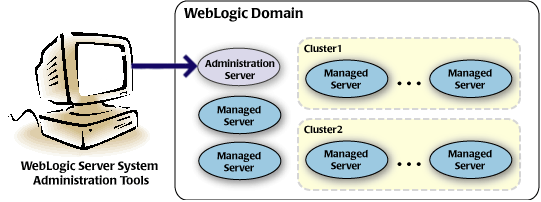

Before integrating Altibase and Weblogic, this chapter briefly explains WebLogic and related terms.
Domain
A domain is a logical grouping of WebLogic server instances. A domain consists of one or more WebLogic Server instances.
The user can configure multiple domains by installing one WebLogic (WebLogic Server/WLS) or multiple domains by installing multiple WebLogic.

WebLogic Server Instance (Administration Server, Managed Server)
WebLogic server instance is a process that can deploy web application, web service, EJB, etc.
It is divided into "Administration Server" and "Manager Server".

To manage the entire domain, the WebLogic server instance with the Administration Console deployed together is created when the domain is created.
Managed Server
All WebLogic Server instances except the administration server can be added separately or clustered between instances.
JDBC Data Source
A JDBC data source is the Java object for a WebLogic server instance to connect to the RDBMS.
When creating a JDBC data source for the RDBMS to be integrated, and specifying the WebLogic server instance to use the JDBC data source, the web application deployed in the WebLogic server instance works with the target RDBMS by specifying the JNDI name of the JDBC data source in the source code.
In order to create a JDBC data source, the relevant JDBC driver must be set in advance so that it can be used in WebLogic.
Connection Pool
Connection set with RDBMS, which is automatically created when creating a JDBC data source, is adjusted by various properties such as "Initial Capacity" and "Maximum Capacity".
Deployment & Distribution
Both deployment and distribution are synonymous for deploy and are unified as "deployment" in this document.
{kind=link}